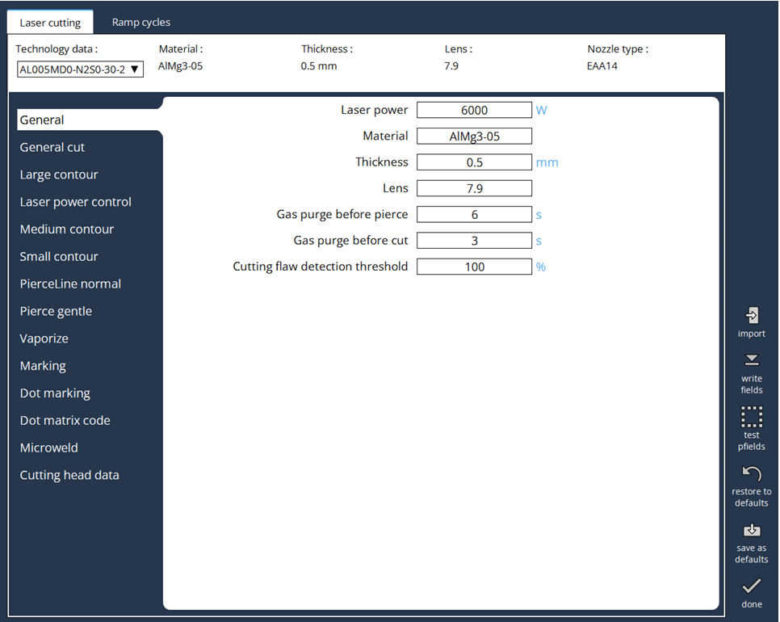

Laser Data items
The Trumpf LTT as it has some more advanced control techniques and evolved over 40 years of Trumpf experience. The Trumpf LTT looks as below:

Normal piercing
"Normal piercing is optimized for fast, reliable processing. The beam remains ignited until the end of the piercing time.
Advantages: "Normal piercing" depending on the gas type: * Oxygen: Start hole is produced with minimal time delay. * Nitrogen: Producing the start hole with nitrogen prevents formation of oxides when starting to cut
Gentle piercing
"Gentle piercing" usually takes a little longer than normal piercing; however, it delivers better quality piercing results. * Defined settings possible in combination with a ramp. * Minimal amount of slag or molten metal being thrown up. * When cutting small contours in stainless steel, a start hole is produced with a small amount of material. This reduces nozzle wear and the increase process reliability.
Multistage piercing
Piercing with up to 3 independent piercing parameter sets. This makes possible pre-treatment and refinishing of the piercing possible, which means, for example that the amount of thrown-up material around the piercing can be greatly reduced.
Area of application: material thicknesses from 10 mm in mild steel, stainless steel and aluminum.
PierceLine piercing sensor
Safety margins have been added to the piercing time in the cutting tables to ensure process reliability. This is necessary above all because the shortest possible piercing time varies depending on the technology, with variation as follows: * From piercing to piercing. * Depending on the quality of the material.
The piercing-end is detected by the piercing sensor, PierceLine, and the piercing process is ended as soon as the material is completely cut through. Thusconsiderably reducing the piercing time.
Approach strategies
In order to avoid damage to the contour from piercing, the material is pierced a few millimeters to one side of the contour. The contour is then approached using various strategies depending on the material, the material thickness and the contour size. === Normal approach With a normal approach, cutting takes place straight from the start hole with the cutting parameters from the appropriate cutting table. === Reduced approaching The contour is approached at a reduced speed. Power, frequency, nozzle distance

Approach with pre-cut
After piercing, a cut of a few millimeters is made at reduced speed, depending on material thickness. The cutting head then returns to the start hole using the last active positioning speed and the contour is then approached and cut with the parameters from the appropriate cutting table.
Cooling after approach
For "Cooling after approach", the laser beam is switched off briefly after the approach before the actual contour is cut. The cutting gas, however, continues to flow and cools the processing point.
Marking and dot marking
Material parts are marked by a change in color on the material surface. The marking can normally no longer be felt after enameling or painting since only a minimum of material is removed.
Cutting procedure
Cutting in Large, Medium and small contour
Contour sizes
In TRUMPF’s CNC programming and laser cutting context, the concepts of large, medium, and small contours relate to the size and complexity of different geometric features in a cutting or machining process. These distinctions help optimize tool movement, cutting strategies, and processing speed.
1. Large Contours
-
Large contours refer to long, continuous cuts or outer profiles of a part.
-
These are usually primary cutting paths that define the external shape.
-
Characteristics:
-
Straight or smoothly curved.
-
Fewer interruptions.
-
Can be cut at higher speeds since there’s less risk of thermal buildup or precision loss.
2. Medium Contours
-
Medium-sized features inside or along the part, such as large cutouts, holes, or slots.
-
These are more complex than large contours but not as intricate as small contours.
-
Characteristics:
-
May require adjustments in cutting speed due to moderate detail.
-
Need some level of precision control to maintain accuracy.
-
Can influence heat dissipation and material behavior.
3. Small Contours
-
These refer to detailed, intricate cuts such as small holes, fine patterns, or sharp corners.
-
Cutting small contours requires higher precision and slower speeds to maintain accuracy and avoid defects.
-
Characteristics:
-
Often involve tight radii, intricate shapes, or densely packed cut areas.
-
Prone to thermal effects (melting, burrs, material distortion).
-
May require adaptive strategies like reduced power, fine nozzle control, or micro-joint techniques.
Analog calibration curves
Trumpf uses a 3 point calibration curve for the analog laser control.

FlyLine
FlyLine is a machining strategy that can help to save a consider able amount of time when machining certain sheet types. FlyLine is especially effective for hole grids. * Laser beam is switched on and off on-the-fly with a high degree of position accuracy. The axes are not stopped when the laser beam is switched on and off. * Individual contours that are not on one line are split up into axis-parallel contour sections. This makes it possible to avoid corner machining. The speed is reduced only for the few changes in direction
Securing cut parts in place
When laser cutting sheet metal, it may be necessary not to cut parts completely free, but to secure them to the sheet metal or the scrap skeleton.
Microjoint
Microjoints create small bridges between the part that has been cut free and the scrap skeleton.
-
Microjoints are created by switching the laser beam off for a certain period of time during the cutting process and then back on again. Meanwhile, the cutting head continues to follow the contour. Due to this interruption, a bridge with the entire sheet thickness remains on the contour path.
■ The process requires rework. ■ The process is suitable for thin to medium-thick sheets. ■ The process takes a certain amount of time.
Nanojoint
Nanojoints specifically create small connections on the under side of the sheet between the cut part and the scrap skeleton. During the cutting process, the laser power is reduced by a certain value for a short period of time so that the sheet metal is not completely severed. After a defined period of time, the laser power is increased again and the cut is continued. This leaves a small connection between the cut part and the scrap skeleton on the underside of the sheet.
■ The process does not add time during the cutting process and therefore does not affect productivity. ■ Due to the small dimensions of a nanojoint, the parts can be easily removed or pulled out.